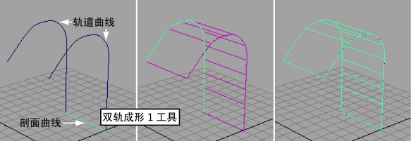

沿两条路径曲线扫描一条或多条剖面曲线（双轨成形）
基于您要使用的剖面曲线数（1 个、2 个、3 个或更多）选择
“曲面 > 双轨成形 > 双轨成形 n 工具”(Surfaces > Birail > Birail n Tool)
。
单击要使用剖面曲线的曲线，然后单击两条轨道曲线。
说明显示在每个步骤的帮助行中。

相关主题
蒙皮跨剖面曲线的曲面
沿路径曲线扫描剖面曲线
父主题：
创建 NURBS 曲面